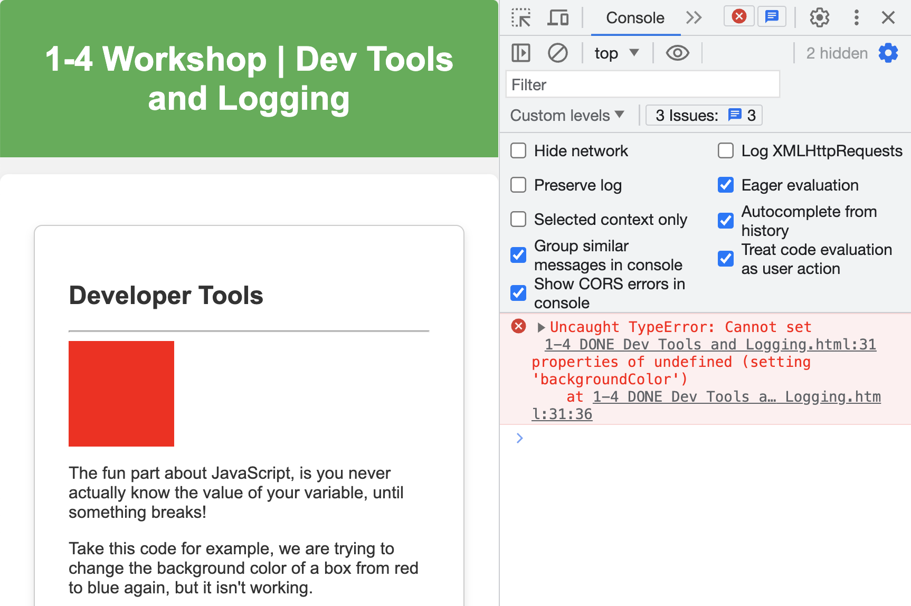

Developer Tools
The fun part about JavaScript, is you never really know the value of your variable, until something breaks!
Take this code for example, we are trying to change the background color of a box from red to blue again, but it isn't working.
From the browser alone, it doesn't look like anything has gone wrong. Let's open up the developer tools and see what's going on.
Translating these errors back into english can be a challenge at first.. Any guesses?
I recommend always having your console open when you are working on a project.
Logging
You can also add your own messages to the console, using
console.log()
This is a very helpful tool for debugging, as well as getting a better understanding of how your code is flowing.
Lets reuse our prompt example from 1-3, but add logging.